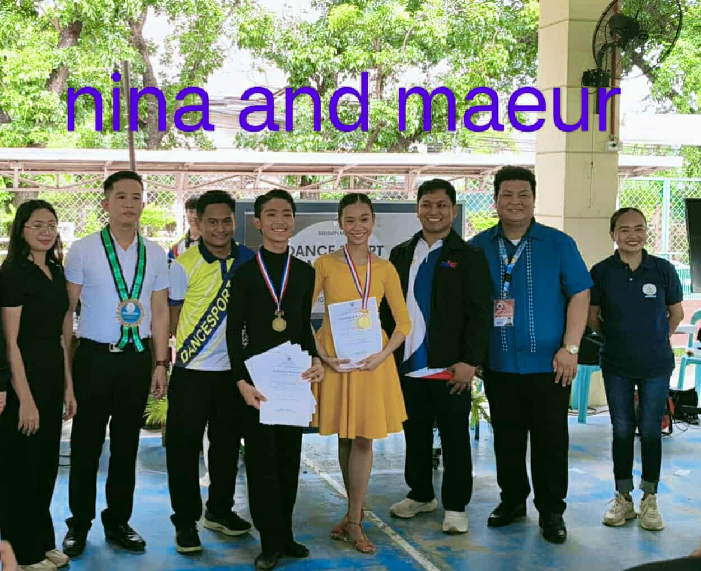
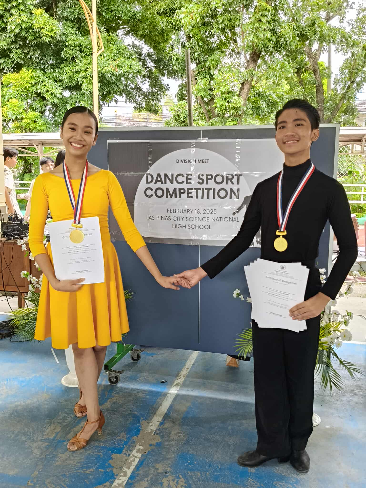

"Winners never quit and quitters never win." — Vince Lombardi
Sports is not just a competition of strength, but a competition of wit, commitment, and teamwork. Being able to witness the talent and fruit of the hardwork of many athletes during the division meet taught me this. They say people either rise as a winner or leave a loser, but I believe that's false. I believe it's a win in itself to be able to represent a your school or an entire cluster. I believe it's a win in itself to be able to perform your best on that fateful day. Whether it be basketball, volleyball, or dancesport, every athlete never quit, that's why they are winners.
It was truly insipiring to see how amazing these people were able to perform. You really learn to never give up, because one day, when you are standing in front of a cheering crowd, you will know it was truly worth it. I doesn't matter how strong or skillful you start as, what matters is the spirit to learn and grow.

